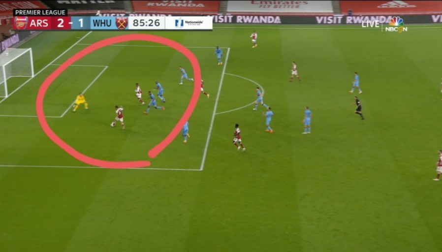

축구규칙
축구의 규칙은 매우 단순한데, 구기로써 당연한 룰과 축구의 본질정도뿐이다. 오프사이드를 제외하면 바이얼레이션이 없기에 초심자의 관전이나 플레이 입문이 쉽다. 1.당연하지만 폭행, 신체접촉 등 일반적인 구기종목에서 금지되는 사항은 금지 2.공을 손에 대지 말 것. 핸드볼 파울. 3.공이 외곽선을 넘으면 적절한 해당 규칙을 통해 인필드로 넣는다. 4.골킥, 코너킥, 드로우인. 오프사이드 플레이 금지.